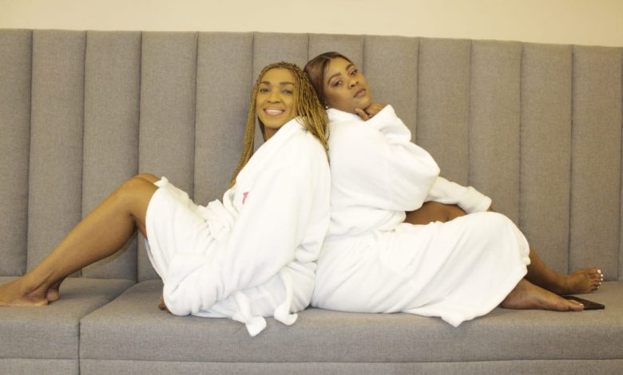

Our Blog
Welcome to our blog.Ubongwe ngokupotozwa uNaima Kay ongalubhadanga emcimbini
July. 7th
Uthe yonke into isihamba kahle phakathi kwakhe nabasunguli bomncintiswano iBrush Mncadi Foundation, okuyinhlangano ezimele yaseMlazi, ephethwe uMnuz uBrush Mncadi.

UMCULI we-Afro Jazz uNaima Kay usethelelane amanzi nabaphathi bomncintiswano wabacula umculo i-Acapella emva kokuba engafikanga ukuzoba ijaji kuhlungwa. Lokhu kulandela ukuthi lo mculi igama lakhe langempela uLungile Khumalo odume ngengoma ethi “Thando” engalibhadanga emcimbini wokwehlunga abazongenela umncintiswano omkhulu obizwa ngokuthi i-Acapella Competition 2021, ohamba nesamba semali engu-R50 000 kozonqoba obubanjelwe eMlazi Cinema kwa-W, zingama-26 kuNhlangulana (June) nonyaka.
UNaima Kay utshele i-Eyethu KZN, ukuthi yonke into isihamba kahle phakathi kwakhe nabasunguli bomncintiswano iBrush Mncadi Foundation, okuyinhlangano ezimele yaseMlazi, ephethwe uMnuz uBrush Mncadi. Izolo ngoLwesithathu, lo mculi ehambisana noThobile Blose walo mncintiswano bebeyiswe eMoon Beauty Spa, lapho befike khona bathola ukupotozwa umzimba nokunye okumnandi ngenhloso yokuthelelana amanzi. “Ubaba uMncadi ukhethe ukuthi size kule ndawo ukukhombisa ukuthi yonke into ihamba kahle phakathi kwethu. Empeleni bekungekho okutheni okusixabanisile, kwaba ukuphambana kwezinkulumo okwagcina ngize ngingafiki emcimbini,”kusho leli iciko. Uvumile ukuthi uzoqhubeka abe ijaji kulo mncintiswano, wathi uyakujabulela ukuba ingxenye yamajaji awahloniphayo okubalwa uMnuz Thenjwayo kanye noSamkelisiwe Mkhize weJoyous Celebration. Funda udaba olulandelayo: I-ANC imise isishoshovu sikaZuma UThobile uthe ukujabulele ukuthelelana amanzi phakathi kwabo naleli iciko. “Sikhulumile izinto eziningi noNaima Kay, savumelana ukuthi sisazosebenzisana kakhulu kusuka manje kuyaphambili. Ngingasho ngithi manje sibheke kumncintiswano omkhulu,”kusho uThobile. Inxusa lalo mcintiswano uDJ Fabulous elisakaza kumsakazo womphakathi Intokozo FM, uthe simuhlabe umxhwele isinqumo sokuthi uNaima Kay uyabuya uzojaja kulo mncintiswano. “Into engijabulisayo ukuthi akuvelanga kwafinyelelwa kulesi sinqumo kodwa kuhlalwe phansi kwakhulunywa. Lo mcimbi uzovundulula amakhono ahlukene emkhakheni wezomculo kuleli lokishi kanye nezinye izindawo eziseduze,” kusho uDJ. Uma ufuna ukujoyina ingxoxo nokuthola izindaba ezishisayo ungasilandela kwezokuxhumana kuFacebook.
Umcintiswano we-Acapella eMlazi nesamba sezi-R50 000
June. 25th
KUZOSHIKISHA ufudu uma sekuhlungwa abaculi bomculo i-Acapella abazongenela umncintswano onesamba sezi-R50 000 kozonqoba emcimbini ozoba eMlazi Cinema esigcemeni sakwa-W ngoMgqibelo zingama-26 kuNhlangulana (June) nonyaka. Umncintiswano obizwa nge- Acapella Competition 2021 ohlelwe inhlangano engenzi nzuzo yakuleli lokishi, iBrush Mncadi Foundation, uhlose ukusiza abaculi abasafufusa ngokufeza izifi so zabo. Inxusa lalo mcintiswano uDJ Fabulous elisakaza kumsakazo womphakathi Intokozo FM, lithe lo mcimbi uzovundulula amakhono ahlukene emkhakheni wezomculo kuleli lokishi kanye nezinye izindawo eziseduze. UDJ Fabulous uveze ukuthi uzongenelwa abaculi abacula ngabodwana, ababili kanye namaqembu.

Sizophinde sibe nembizo lapho kuzoqeqeshwa khona abaculi abacula lolu hlobo lomculo
"Nakuba lo mcintiswano wenzelwe eMlazi kodwa sizonikeza nabanye abaculi abaqhamuka ezindaweni ezakhele leli lokishi ithuba lokuziveza. Abaculi abalindeleke ukuba bangenele lo mcimbi ilabo abasafufusa asebekhiphe amacwecwe abo noma ingoma eyodwa,” kusho uDJ Fabulous. Nokho uthe ukungavaleli ngaphandle namanye amaciko, nalabo baculi abangakaze bakhiphe amacwecwe noma ingoma bazovunyelwa ukuba bangenele. Uthe abaculi asebephumelele okubalwa iqembu i-Abanqobi, i-Ithimba Le Afrika kanye namanye amaningi yibona abasungula lolu hlobo lomculo eMlazi.. Uveze ukuthi ukuhlunga kuzokwenziwa izikhawu ezimbili njengoba kuzoqala ngoMgqibelo kanti okunye okuzolandela kuzoba ngoNtulikazi (July).
Umcimbiomkhulu uzobanjwa zingama-20 kuLwezi (November) nonyaka. “Sizophinde sibe nembizo lapho kuzoqeqeshwa khona abaculi abacula lolu hlobo lomculo abangakwazanga ukunqoba. Sizophinde sinike abaculi noma amaqembu anekusasa elithembisayo ithuba lokuba ayoqopha nezinkampani ezikhiqiza umculo ezisezingeni eliphezulu kanjalo nokubafundisa ukuthi bangawusebenzisa kanjani umculo ukuxosha ikati eziko,” kusho inxusa. Amajaji azobe ehlunga abenze kahle kubalwa uMnuz Thenjwayo, umculi uNaima K, uSamkelisiwe Mkhize weJoyous Celebration. UDJ Fabulous uthe imicimbi yonke izoqala ngehora leshumi ekuseni. Elinye inxusa lalo mcintiswano uSabelo Ngema, lithe imithetho yokugwema ukubhebhetheka kokhuvethe izolandelwa. Uthe lo mcintiswano wenziwe eMlazi ngoba lolu hlobo lomculo luqale kuleli lokishi. “Sineqembu elifana ne- Abanqobi kanye ne-Ithimba Le Afrika abalwa namanye asungula lo mculo njengoba eseneminyaka engama-21. “Empeleni senza lo mcimbi ngoba sifuna ukukhombisa abantu ukuthi siyaziqhenya ngalo mculo wakithi,” kusho uNgema. Unxuse amabhizinisi azimele kanye nohulumeni ukuba bafake isandla ukuqhubela phambili lolu uhlelo oluzophucula amakhono abaculi abaningi, luphinde lulwe nenkinga yokwesweleka kwemisebenzi eNingizimu Afrika. Ukuthola kabanzi ngalo mcintiswano kushayelwa uDJ Fabulous ku: 083 546 0509 noma uNgema kwethi: -078 505 6215.
Uza eThekwini owamabhayisekili
June. 25th
IZINKULUNGWANE zabashovi bamabhayisekili abaphuma emhlabeni kulindeleke batheleke edolobheni iTheku ngoLwezi (November) ukuzoncintiisana kumjaho i-aQuelle Tour Durban. Lo mcintiswano odume ngemijaho enamabanga ahlukene okubalwa i-135km, i-90km kanye ne-45km kulindeleke ukuba ube nabashovi abayizi-4000 kanti kuzoba okokuqala ubanjwa ngesikhathi esinzima lapho kubhidlange ukhuvethe. Njengoba izwe lihlaselwa igagasi lesithathu lalolu bhubhane, abaphathi nabahleli balo mcintiswano bahlehlise usuku obelubekelwe ukuba ubanjwe ngawo ngoNcwaba (August) nonyaka, kwabekwa ukuthi uqale zingama-27 bese uphela zingama-28 kuLwezi nonyaka ukubanikeza isikhathi esanele ukuqinisekisa ukuthi lo mcintiswano uphephile futhi okumele bahlomula ngendlela ekahle.

Abashovi bamabhayisekili kulindeleke ukuthi batheleke kwelikabhanana ngoLwezi.
Sizitholele usuku esingalusebenzisa ekupheleni kwenyanga kaLwezi esethemba ukuthi zonke izinto zizobe sezimi ngohlelo
Ohlela lo mcintiswano u-Alec Lenferna uthe kumhlabe umxhwele ukubona intshisekelo enkulu kubasubathi kulo nyaka emva kwemibuzo aseyithole kubashovi mabhayisekili ezweni lonke. Uthe isinqumo sokuhlehlisa usuku lo mcimbi basithathe ngokuhlanganyela nenhlangano ebhekele ukushovwa kwamabhayisikili iCycling South Africa (CSA). “Sizitholele usuku esingalusebenzisa ekupheleni kwenyanga kaLwezi esethemba ukuthi zonke izinto zizobe sezimi ngohlelo ukuba kubanjwe umcintiswano nokuthi singakwazi yini ukulandela imithetho ezobe ibekiwe ngaleso sikhathi ukugwema ukusabalala kobhubhane. Siyakholwa ukuthi ngesikhathi somcintiswano imvalelwendlini izobe isakhona kodwa siyethemba ukuthi sibeke uhlelo oluzoqinisekisa ukuthi umcimbi uzobakhona,” kusho uLenferna.
Uthe lo mcintiswano uzoxhasa inhlangano engenzi nzuzo esiza abahlwempu edinga usizo kakhulu iThe Domino Foundation, uphinde unike ithuba abashovi bamabhayisekili lokuncintisana kumdlalo walolu hlobo. Ngosuku lokuqala ngoMgqibelo zingama-27 kuLwezi, kuzoqala imijaho yeMTB ezobe yenziwa ngaseCornubia Mall. Ngosuku olulandelayo iSonto kuzoba nomjaho odumile wama- 45km ohamba ngoM4 ujike eMdloti uphinde ubuye, kulandele owama- 90km kugcine owe-135km. Uveze ukuthi imijaho yasemgwaqeni izoqala ngokwahlukana ukuqinisekisa ukuthi imithetho yokugwema ukubhebhetheka.